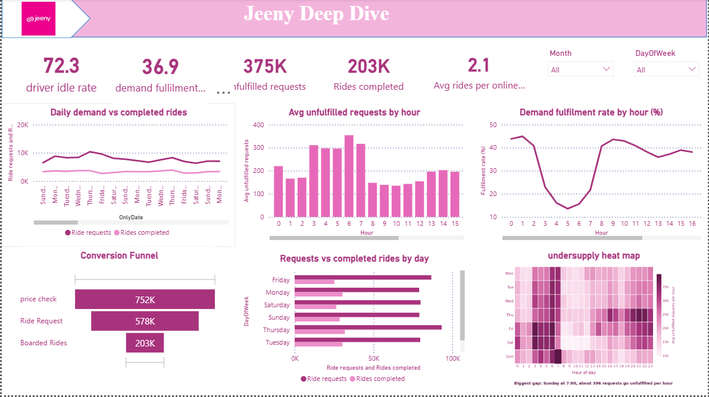

↗
POWER BI · PYTHON · OPERATIONS
The client thought they needed more drivers
They didn't. Demand did outstrip supply, but drivers sat idle 72.3% of the time while requests went unanswered. The constraint was ride acceptance, not headcount, so I recommended demand based dynamic pricing instead of recruitment.
Power BIDAXPythonseaborn
Read the case study